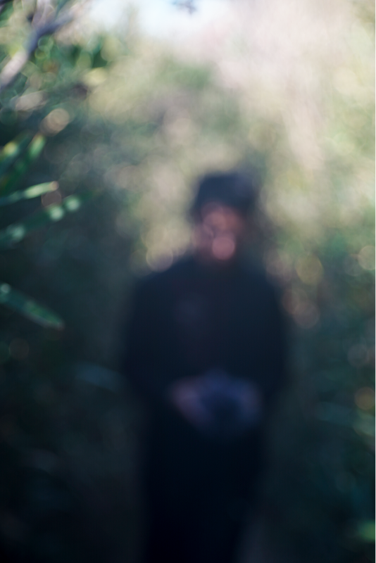

nodayuta.mp3
野田結太 -- 10:55
kikuchiyuki_jgoe.mp3
菊地佑樹 -- 53:49
isezakiasahi.mp3
伊勢崎あさひ -- Audio Transcript

kurosaki.mp5
野田結太 / 葉山 黒崎海岸 -- 10:55

野田結太.mp5
野田結太 / 葉山 黒崎海岸 -- 10:55
link with you
shared links — everyone
参考.mp5
.mp5 / 参考